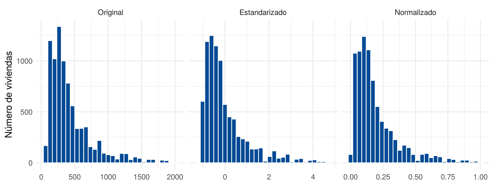
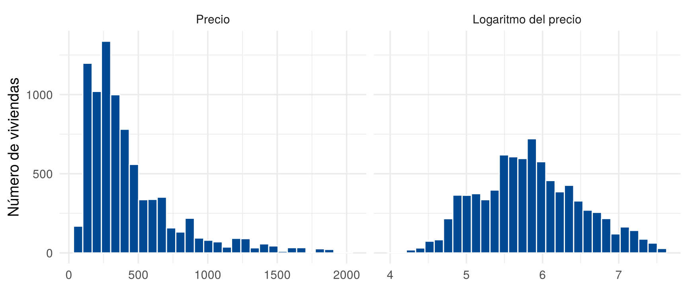

Transformar es cambiar la forma en que se expresa una variable, o crear variables nuevas, para preparar los datos para el análisis. Esta página presenta los procesos más usados: construir variables, estandarizar, normalizar y aplicar un logaritmo. Toda transformación debe tener una razón y quedar registrada en el código.
Esta página usa CarreraLuz22 y
vivienda_faltantes, del paquete
paqueteMETODOS, y los paquetes dplyr,
ggplot2, scales y e1071. Los
bloques de código se ejecutan en orden.
library(paqueteMETODOS)
data("CarreraLuz22")
data("vivienda_faltantes")library(dplyr)
library(ggplot2)
library(scales)
library(e1071)
viviendas <- filter(vivienda_faltantes, !is.na(id))Muchas veces la información útil no está en una variable, sino en una
combinación de varias. La función mutate(), de
dplyr, agrega columnas nuevas. También se puede hacer con
$.
viviendas <- mutate(viviendas,
precio_area = preciom / areaconst,
tamano = cut(areaconst, breaks = c(0, 100, 200, Inf),
labels = c("Pequeña", "Mediana", "Grande")))
select(viviendas, preciom, areaconst, precio_area, tamano) |> head(3)
# A tibble: 3 × 4
preciom areaconst precio_area tamano
<dbl> <dbl> <dbl> <fct>
1 1300 318 4.09 Grande
2 480 300 1.6 Grande
3 1200 800 1.5 Grande
tapply(viviendas$precio_area, viviendas$estrato, median, na.rm = TRUE) |> round(2)
3 4 5 6
1.71 2.50 2.82 3.66 El precio por unidad de área permite comparar viviendas de distinto
tamaño: su mediana sube de 1.71 millones en estrato 3 a 3.66 en estrato
6. Los cortes de tamano son una decisión del analista, y
deben justificarse.
¿Para qué sirve? Lleva una variable a una escala con media 0 y desviación estándar 1. Permite comparar valores de variables o grupos con unidades o escalas diferentes.
¿Cómo se calcula? Cada valor se convierte en un valor z, que indica a cuántas desviaciones estándar está de la media:
\[ z_i = \frac{x_i - \bar{x}}{s} \]
¿Cómo se hace en R? Se aplica la fórmula, o se usa
scale():
x <- 1:5
(x - mean(x)) / sd(x)
[1] -1.2649111 -0.6324555 0.0000000 0.6324555 1.2649111
as.numeric(scale(x))
[1] -1.2649111 -0.6324555 0.0000000 0.6324555 1.2649111¿Cómo se interpreta? Por ejemplo, ¿qué tan rápido fue un tiempo de 60 minutos en la categoría Juvenil y en Veteranos C?
minutos <- CarreraLuz22$timerun / 60
valor_z <- function(categoria, tiempo) {
grupo <- minutos[CarreraLuz22$categoria == categoria]
(tiempo - mean(grupo)) / sd(grupo)
}
round(c(juvenil = valor_z("1. Juvenil", 60), veteranos_c = valor_z("5. Veteranos C", 60)), 2)
juvenil veteranos_c
-0.32 -0.46 Un valor negativo indica un tiempo menor que el promedio de la categoría. Los 60 minutos están más por debajo del promedio en Veteranos C que en Juvenil.
¿Para qué sirve? Lleva una variable a un rango definido, usualmente de 0 a 1. Se conoce como min-max.
¿Cómo se calcula?
\[ x_i' = \frac{x_i - \min(x)}{\max(x) - \min(x)} \]
¿Cómo se hace en R? Se aplica la fórmula, o se usa
rescale(), del paquete scales:
(x - min(x)) / (max(x) - min(x))
[1] 0.00 0.25 0.50 0.75 1.00
rescale(x)
[1] 0.00 0.25 0.50 0.75 1.00¿Qué cuidados tener? Depende del mínimo y del máximo, así que un solo valor extremo aplasta a los demás. Además, produce exactamente los valores 0 y 1. Por eso no sirve para métodos que exigen valores estrictamente entre 0 y 1, como la regresión beta.
No. Son transformaciones lineales: cambian la escala, pero no la forma de la distribución. Una variable asimétrica sigue igual de asimétrica.
precio <- na.omit(viviendas$preciom)
formas <- data.frame(
valor = c(precio, as.numeric(scale(precio)), rescale(precio)),
escala = factor(rep(c("Original", "Estandarizado", "Normalizado"), each = length(precio)),
levels = c("Original", "Estandarizado", "Normalizado"))
)
ggplot(formas, aes(x = valor)) +
geom_histogram(bins = 30, fill = "#034A94", color = "white") +
facet_wrap(~ escala, scales = "free_x") +
labs(x = NULL, y = "Número de viviendas") +
theme_minimal(base_size = 13)
El precio original, estandarizado y normalizado
round(c(original = skewness(precio), estandarizado = skewness(scale(precio)),
normalizado = skewness(rescale(precio))), 3)
original estandarizado normalizado
1.847 1.847 1.847 ¿Para qué sirve? Reduce la asimetría a la derecha, porque acerca los valores grandes. Es útil en variables positivas como precios o ingresos, en las que importan más los cambios proporcionales que los absolutos.
¿Cómo se hace en R? log() usa el
logaritmo natural y log10() el de base 10.
comparar <- data.frame(
valor = c(precio, log(precio)),
escala = factor(rep(c("Precio", "Logaritmo del precio"), each = length(precio)),
levels = c("Precio", "Logaritmo del precio"))
)
ggplot(comparar, aes(x = valor)) +
geom_histogram(bins = 30, fill = "#034A94", color = "white") +
facet_wrap(~ escala, scales = "free_x") +
labs(x = NULL, y = "Número de viviendas") +
theme_minimal(base_size = 14)
El precio antes y después del logaritmo
round(c(precio = skewness(precio), logaritmo = skewness(log(precio))), 2)
precio logaritmo
1.85 0.25 ¿Cómo se interpreta? Una diferencia de 1 en
logaritmo natural equivale a multiplicar por \(e \approx 2.72\). Para volver a la escala
original se usa exp().
¿Qué cuidados tener? No existe para cero ni para
valores negativos. Si hay ceros, log1p() calcula \(\log(1 + x)\), pero cambia la
interpretación. Conviene reportar los resultados en la escala
original.
| Transformación | Conviene para | Cambia la forma | Cuidado |
|---|---|---|---|
| Construir | Crear indicadores con sentido | No aplica | Justificar la definición |
| Estandarizar | Comparar escalas distintas | No | Queda sin unidades |
| Normalizar | Llevar a un rango fijo | No | Sensible a valores extremos |
| Logaritmo | Reducir la asimetría a la derecha | Sí | Solo para valores positivos |
La necesidad de estas transformaciones depende del método. Los que usan distancias o combinan variables, como k vecinos cercanos, el análisis de componentes principales o la regresión con penalización, son sensibles a la escala, por lo que se suelen estandarizar las variables antes (James et al., 2021). La regresión lineal por mínimos cuadrados no lo necesita para sus predicciones: al cambiar la escala de una variable, su coeficiente se ajusta.
| Problema | Causa | Solución |
|---|---|---|
| Se estandariza para corregir la asimetría | Se cree que cambia la forma | Usar otra transformación, como el logaritmo |
log() da -Inf |
La variable tiene ceros | Revisar los ceros o usar log1p() |
log() da NaN |
Hay valores negativos | Revisar la variable |
scale() devuelve una matriz |
Es su salida normal | Usar as.numeric(scale(x)) |
mutate() no cambia la tabla |
No se guardó el resultado | Asignar con <- |
| Los resultados se reportan en escala transformada | No se volvió a la escala original | Usar exp(), y explicarlo |
Cree la variable banios_hab, con el número de baños por
habitación. ¿Qué problema tiene si habitac vale cero?
viviendas <- mutate(viviendas, banios_hab = banios / habitac)
sum(viviendas$habitac == 0, na.rm = TRUE)
[1] 66
sum(is.infinite(viviendas$banios_hab))
[1] 31Dividir entre cero da Inf o NaN. Esos
registros se revisan antes de usar la variable.
Estandarice el precio de las viviendas dentro de cada estrato. Una vivienda de estrato 3 cuesta 500 millones y una de estrato 6 cuesta 800. ¿Cuál es más costosa frente a su estrato?
z_estrato <- function(e, valor) {
grupo <- viviendas$preciom[viviendas$estrato == e]
(valor - mean(grupo, na.rm = TRUE)) / sd(grupo, na.rm = TRUE)
}
round(c(estrato3 = z_estrato(3, 500), estrato6 = z_estrato(6, 800)), 2)
estrato3 estrato6
2.16 0.00 La vivienda de estrato 3 está muy por encima del promedio de su estrato, mientras que la de estrato 6 está cerca del suyo.
Calcule la asimetría de areaconst y de su logaritmo.
¿Qué transformación usaría para reducir la asimetría?
area <- na.omit(viviendas$areaconst)
round(c(area = skewness(area), logaritmo = skewness(log(area))), 2)
area logaritmo
2.69 0.51 El logaritmo, porque reduce la asimetría. Estandarizar o normalizar no la cambiaría.
mutate().Última revisión: 5 de noviembre de 2026.